Başlangıçta yalnızca bir hücre topu olan döllenmiş yumurta hücresi, 10 gün içinde rahim duvarına tamamen yerleşir. 3 hafta sonra, 2 milimetre büyüklüğündeki embriyonun kalbi atmaktadır.
Altı haftalıkken beyin, gözler, ciğerler ve kulak gelişir. Sadece 8-10 mm boyundaki bu embriyo, güvenli bir şekilde, gümüşî zarın içinde yüzüyordur. Yedinci haftada yüzü, gözleri, burnu, dudakları ve dili görünür hale gelir. Diş ve kemiklerin oluşumu başlar. Sekizinci haftada parmaklar ve eller seçilebiliyorken, ayak parmaklarının yerleri oluşur ve kas hareketi başlar.
Embriyo 2 aylık olduğunda, cinsiyet belirginleşmeye başlar ve ilk hareketleri sergiler. Bir ay sonra cenin esner ve gerilerek uzanır. Artık vücudun temel yapısı tamamlanmıştır.
6 aylık ceninin günlük uyanma ve dinlenme evreleri vardır. Beyni, duyu organlarıyla bağlantıya geçer. Annesinin kalp atışı ve sesi gibi bazı gürültüleri fark eder.
7 aylıkken 1 kg olan ve 280 günlük bir maceradan sonra ana rahminden bu dünyaya doğacak olan bebeğim rahim içi hayatındaki gelişimi, programlı ve şaşmaz bir dakiklikle, büyük bir intizam içinde kendini göstermektedir.
Hamileliğin son aylarında anne vücudu, yaşamı boyunca biriktirdiği ve hastalıkları önleyen proteinlerden oluşan antikorları bebeğine aktarır. İlk emzirmeyle birlikte gelen sütün içinde yine bebek için antikorlar vardır.
İşte bu devrede doğacak olan çocuğun ruh ve beden sağlığı için dikkat edilecek bazı önemli hususlar:
• Sigara, alkol ve uyuşturucu kullanımı cenin beyninin gelişimini kötü yönde etkiler ve çocuğun ilerde öğrenme zorluğu ve davranışsal problemler yaşama riskini artırır. Özellikle nikotin damarları daraltarak fetüse yeterli besin ve oksijen gelmesini engeller.
• Anne adayı, hamilelik süresince dengeli ve yeterli beslenmelidir. Özellikle balık, tam (komple) ekmek ve tahıl ürünleri ağırlıklı gıdaları almalıdır.
• Aşırı stresten, üzüntü ve kaygıdan uzak durmalıdır. Mutlu olur, gülümser ve huzurlu ortamda yaşarsa bebeğe de bu olumlu hava yansır. Yani bebek, annesinin karnında, onun mutluluğunu hisseder ve o da mutlu olur.
• Anne, ilaç kullanmada titiz davranmalı, doktorun onayı olmadıkça ilaç almamalıdır.
• Bebek, anne ve baba tarafından istenen ve gelmesi merakla, heyecanla beklenen bebek olmalıdır.
Doğumdan sonra çocuğun ilk etkileşimde bulunduğu ve kendisine en yakın olan kişi annesidir.
Annenin çocuğu ile olan ilişkisinin niteliği, çocukta güven duygusunun gelişmesi ve yerleşmesinde çok önemli rol oynar. Çocuk özellikle ilk aylarda yakınlık ve sıcaklık duymak ve sevilmek istemektedir. Bunu çocuğa veren kişi de çoğunlukla anne olur. Kendisine çok yakın olan bir kimsenin yokluğu, çocukta güven duygusu gelişimini engeller.
Çocuğun ilk sosyal teması beslenirken başlamaktadır. Bir bebeğin ağlamasını, yaygarasını seyrederken, açlığın onun için acı veren bir duygu olduğunu anlamak mümkündür. Açlığı gecikmeden ve onu uğraştırmadan giderilirse, bebekte kendini besleyenlere karşı bir güven duygusu gelişmeye başlar. Bu duygu annenin çocuğu sevmesi, okşaması, bağrına basması, ona çok yakın ve yanında olduğunu hissettirmesiyle giderek güçlenir.
Çocuk acıktığında ağlar. Bebek, açlığı giderilmezse, kafasını vurmak ve sallamak gibi daha değişik alışkanlıklar geliştirir. Problemi çözecek yol bulamayınca da davranışlarında zamanla duygusuzluk, soğukluk görülür. Böylece bebeğin ilk sosyal ilişkileri belirlenir. Eğer bunlar haz veren yaşantılarsa bebek, anne ile rahat eder ve tatmin olur. Aksi durumlarda ise anne, çocuk için bir gerginlik simgesidir. Anne ile bebek arasında devamlı bir sevgi ve yakınlığın bulunması önemlidir.
Yeni doğmuş bebeklerin annelerinden ayrılmaları halinde hastalandıklarını veya huzursuz olduklarını, annelerinin geri döndüğünü nasıl hissettiklerini, anneleri gerçekten odalarına girmeden dakikalarca önce nasıl birdenbire canlandıklarını ve sakinleştiklerini hep görmüşüzdür.
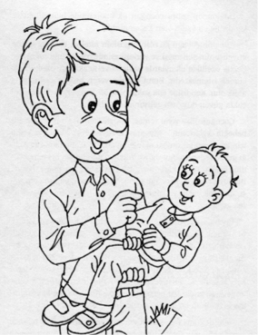
Günümüzde iş yoğunluğu ve sosyal hayat sebebiyle babalar, çocuk eğitimini annelere terk etmiş durumundadırlar. Hâlbuki bu yanlıştır ve anne ile babanın payı yüzde elli-ellidir.
Baba, disiplin uygulayıcısı olarak, otoritesini ortaya koyduğunda ve müşfik de olduğunda çocuk gelişiminde olumlu katkısı büyük olur. Çünkü çocuğun örnek alacağı model olarak “baba figürü” çok önemlidir.
Babanın olmadığı ailelerde büyüyen çocuklarda kadınsı yöneliş, pasif kişilik, sosyal gelişiminde aksamalar ve suça eğilim dikkati çekmektedir.
Babaların çocuklarına verecekleri o kadar çok şey vardır ki:
Öncelikle çocuklarına aktarılacak büyük bir bilgi ve tecrübe yükü ile donanmıştır. Değer yargılarımızı ve inancımızı benimsetmekte babanın rolü büyüktür. Ayrıca çocuk, babasının, annesine davranışına bakarak çok şey, en başta da cinsel kimliğini öğrenir.
Yine babalarının kendileriyle ilgilendiği çocukların, ileride baba olduklarında, hem kendi çocuklarına, hem de babalarına daha çok vakit ayırdıkları görülmüştür.
Çocuğa koyacağımız ad çok önemlidir ve onların psikolojisini etkiler.
Bu yüzden çocuğumuza o devrin kibrit alevi gibi parlayan ünlü birilerinin adını değil, soyumuzdaki saygın birinin veya ülkemize, insanlığa hizmet etmiş ve hayranlık uyandıran kişilerin ismini verelim. Ayrıca verdiğimiz ismin anlamı da güzel olmalıdır.
Bir başka husus ise toplumda alay konusu yapılabilecek ve çocuğumuzu küçük düşürebilecek isimlerden kaçınalım.
Yine her iki cinse verilebilecek isimlerden de uzak duralım.
Hiç bilinmeyen, telaffuzu zor olan isimleri de tercih etmeyelim.
Bebeğe anne sütü vermekle bedensel gıdasını sağlamış olmakla birlikte, anne-çocuk bağlılığı gerçekleşmekte ve yavruya sevgi de verilmiş olmaktadır.
Emzirme bebekler için en iyi beslenme şekli ve aynı zamanda onları hastalıklardan koruma yoludur. Anne sütü ayrıca hiçbir yerde üretilemeyecek olan, beynin gelişmesini sağlayan besinler içerir. Sütün tüm bu mucizelerinin yanı sıra, emzirme bir annenin çocuğunu okuma ve tanıma becerisini de geliştirir. Emzirmekle anne, çocuğunun acıkma belirtilerini anlar, bu isteğine anında karşılık vermeyi öğrenir.
Emzirmek, “bebekle anne arasında bağ oluşturmak” gibi çok önemli bir özellik sağlamasının yanı sıra annelerin kendilerini sakin ve rahat hissettirecek hormon, prolaktin ve oksitosin üretmesine ve gerçekten anne olduklarının farkına varmalarına yol açar.
Anne sütü alan bebekler daha zeki olmaktadır. Yine anne sütü hızlı hazmedildiği için emzirilen bebekler daha sık beslenirler ve böylece anneleriyle daha sık etkileşimde bulunurlar. Emziren anneler de bebeklerinin ihtiyaçlarına karşı daha hassas olurlar.
Anne sütünün faydaları saymakla bitmez ve her geçen gün yeni yeni özellikleri ortaya çıkmaktadır.
• Kemiklerin, sinir sisteminin, diğer organ ve dokuların en iyi şekilde gelişmesi için gerekli maddeleri içeren anne sütü, aynı zamanda bağışıklık sistemini de güçlendirir. Anne sütü alanlar hastalıklara yakalanmaya karşı dirençli olmaktadır.
• Anne sütüyle beslenen bebeklerin anneyle daha güçlü bir yakınlığı olmakta, algılamaları daha çabuk gelişmektedir.
• Süt veren annelerin rahmi ve karnındaki yağ dokusu kısa zamanda eski şeklini almaktadır.
• Anne sütü kolay elde edilir. Her an bebek için hazırdır. Isıtma, soğutma problemi yoktur. Gece yataktan kalkmadan emzirmek mümkündür. Hazmı kolaydır. Annelerin, bebeklerinin susuz kaldığı konusunda endişe etmelerine gerek kalmaz. Anne sütü, onlara ihtiyaç duydukları, her gıdayı sağlamaktadır.
• Emzirme, bebekleri hastalıklardan korumak için elzemdir.
• Anne sütü aynı zamanda hiçbir yerde üretilmeyen, beynin gelişmesini sağlayan besinler de içerir.
• Emziren anneler de kendilerini sakin ve rahat hissettirerek hormonlar (prolaktin ve oksitosin) üretmesine ve gerçekten anne olduklarının farkına varmalarına yol açar.
Bu yüzden anneler en az 6 ay bebeklerine sadece sütlerinden vererek beslemeli, mümkünse başka gıdalarla destekleyerek bu süreyi 2 yıla kadar çıkarmalıdırlar.
Bebek yeni doğduğunda yatağı, anne ve babaya yakın olmalı, yattığı sepet veya beşik mümkün olduğunca anneye yakın konmalıdır. Ebeveyn ihtiyaç duyduğu anda bebeğe dokunabilmeli, anne her zaman bebeğin hafifçe soluk almasını duyabilmelidir. Böylece bebekler uykunun zevk veren bir şey olduğunu öğrenir ve güven içinde uykuya dalarak korku hissetmezler.
Araştırmalar ebeveynin bebekleriyle mümkün olduğu kadar çok vakit geçirmesinin avantajlarından bahsetmektedir. Hatta doğum esnasında özel olarak gösterilen ufacık bir ilginin dahi büyüme, sağlık ve öğrenmede farklılıklar oluşturduğu gösterilmiştir.
Teşvik etmenin en önemlisi; bebeği annenin göğsünde tutmaktır. Bebeği, annesinden ayırmamak, sarılmak, kucaklamak, emzirmek, hoş musikî dinletmek, renkleri göstermek, etrafı ellemesini, görmesini sağlamak ve normal yetişkin sohbetlerinin olduğu mekanlarda beraber olmak gerekir. Tabiî ki gürültülü, patırtılı ortamlar mahzurludur. Ancak huzurlu ebeveynlerin yanı onlar için en uygun yerdir.
Bebeği zorlamadan, bunaltmadan çeşitli yollardan hareket etme, tat alma, koklama, dokunma, görme ve duyma duyularını tecrübe etmesine yardımcı olmalıyız.
Anne-babaların yavrularıyla hayatının ilk birkaç yılını yoğun paylaşmalarında ve daha çok birlikte olmalarında fayda vardır.
Böylelikle çocuk, belki de ömür boyu devam edebilecek bir korkusuzluk, huzur ve güven duygusuna kavuşacaktır. Çünkü anne-babasıyla aynı odada yatan çocuklarda kâbus görme, gece yarısı uyanma, karanlıktan korkma, uyumama ve benzeri haller pek yaşanmaz. Gece, bebekler ve küçük çocuklar için korkutucu zamanlardır ve güvendikleri ebeveynlerinden ayrı kalmak onları endişelendirir.
Ancak çocuk 3-4 yaşına gelince odasını ayırmak gerekir. 7-8 yaşına geldiğinde değişik cinsiyetteki kardeşi ile odalarını ayırmalıdır. Çünkü her çocuk kendi cinsiyetine uygun özellikleri, kendi odasında rahatlıkla yaşamalıdır.
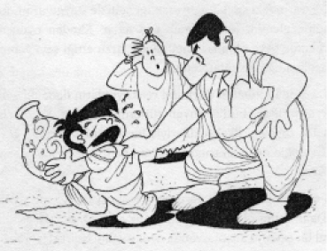
Bebek doğumdan sonra ilk tepkisini ağlayarak gösterir. Altı ıslandığında, üşüdüğünde, sancılandığında ve acıktığında ağlar yani ihtiyaç ve isteklerini ağlayarak belli eder.
Doğumdan birkaç ay sonra bebekteki yüksek seslere karşı ağlama, elem ve acı veren bir etkiye karşı yapılan tepkidir.
Ağlama, zamanla çeşitli sesler çıkarıp anlam kazanmaya başladığında, duygusal tepkiler olarak kullanılmaya başlar. Öyle ki, çocuk, annesinden ayrı kaldığı ve onu özlediği zaman da ağlar. Burada çocuğun sevgi, şefkat ve yakınlık duygularını arzu etmesi ağlamanın bir sebebi olabilir.
Bazı ebeveynler, bebeklerin ağlayışlarına karşılık vermenin onları daha çok ağlamaya teşvik edeceğini sanırlar. Bu doğru değildir.
Bebek, ağladığında kucağa alıp sarılmalı, yaygara kopardığında onu rahatlatmalı, değişik sesler çıkardığında gülümseyerek karşılık verilmelidir.
1-2 yaşındaki çocuk ağlıyorsa, genellikle duygularını, kızgınlığını, elemini ifade etmek için ağlar.
Elinden oyuncağı alındığında veya alınmak istediğinde, arzu ettiği şeyi yapması engellendiğinde ağlar, tepinir.
3 yaşından itibaren duygusal reaksiyonların daha da gelişmesiyle birlikte, bütün duygu türlerini yaşarlar. Kıskançlık, inatçılık, sevinç... İlkel şekilleriyle bu duygular çocukta görülür. Özellikle oyun sırasında darılma ve itişmeler ağlamasına yol açar.
4-6 yaşlarında merak, yarışmada başarısızlık ağlama sebebidir.
Daha sonra okula başlayan çocuğun yeni ve karmaşık bir sosyal bir çevreye adaptasyonda uyumsuzluk belirtisi olarak ağlama görülür. Yaş ilerledikçe çabuk ağlamalar azalmaya başlar.
Çocuğumuza sevgi vermek; onu önemsemek, güvenliğini sağlamak, kişiliğini geliştirmesi için özgürlüğünü desteklemek, ona gülümsemek, üzüntüsünde yanında olmak gibi fiillerle belli olur. Onu bir bütün olarak sevmeliyiz. “Seni seviyorum” cümlesinden çok, davranışlarımız ve bakışımızla sevdiğimizi göstermeliyiz.
Okul öncesi çocuklar sevgiyi yüz ifademizden anlarlar. Onlar sadece yüzdeki mesajı görürler. Onunla birlikteyken mutluysanız bunu hissederler.
Altı yaşlarındayken sosyal ilişkilerindeki ufak ayrıntıları fark etmeye başlayabilir; aynı yetişkinler gibi onlar da sevginin “benden sana, senden bana” şeklinde eşsiz ve özel bir duygu olduğunu anlamaya başlarlar. Gerçek sevginin duruma göre değişip yok olmadığını bilir, kızgın olmakla sevginin azalmayacağını görürler.
Kısacası sevgi bir hayat tarzıdır, sadece “Seni seviyorum” demekle bitmez.
Çocuğun kişilik gelişiminde en çok etkili unsur, adale yapısıdır. Çarpık bir aile düzeni, sağlıksız bir gelişim ve uyumsuz bir kişilik ortaya çıkarır.
Bazı ailelerde anne-babalar, kendi kurallarını geçerli kılmak için, sürekli kavga ederler ve çocuklarına gerekli ilgi ve sevgiyi göstermezler. Ev içinde sürekli gerilim yaşanması ve anne- babanın çatışma içinde olması, gelişim evresindeki bir çocuk için çok tehlikeli ve yanlıştır.
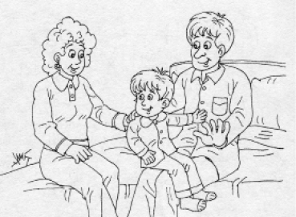
Hâlbuki anne-babanın birbirini sevdiği ve saygı gösterdiği ortamda çocuk da huzurlu ve mutlu olur, kendine güveni artar. Saygı derken; eşinin kişiliğini, mesleğini, davranışlarını, öğrenimini, kökenini olduğu gibi kabul edip, eşine o haliyle saygı duymak ve beğenmek anlaşılmalıdır.
Özellikle çocuğun kişiliğinin geliştiği ilk altı yaşta anne ve babanın vakit ayırması, zekâ ve ruhsal olgunlaşmasında çok önemlidir. Ama bu sadece çocuğa ayrılan “kaliteli vakit” olmalıdır.
Ona vakit ayırdıkça kendisine kıymet verdiğimizi görür, kendine güveni artar.
Yine çocuk böylelikle daha hoş ve mutlu vakit geçirir, canı sıkılmaz. Strese karşı daha dayanıklı olur.
Ayrıca anne-baba ve çocuk arasında yakınlık artar, onu ve dünyasını daha iyi tanımış olurlar.
Tabiî onlara ayıracağımız vakit, televizyon seyrederek ilgilenmek veya başka bir iş yaparken yanımızda tutmak şeklinde değil, birebir iletişim şeklinde olmalıdır.
Çocuğun ilk ve temel eğitimi aileyle olur, aileyle kişilik kazanır. Özellikle sosyal ve kültürel yönden böyledir. Çocuk aile büyüklerini örnek alarak, onları taklit ederek gelişmeye devam eder. Yani aile, insanın en köklü eğitim faaliyetlerini aldığı, pek çok şeyler öğrendiği ve onu hayata hazırladığı en önemli kurumdur.
Kişiliğin 6-7 yaşına kadar büyük ölçüde şekillendiğini göz önüne alırsak, ailenin önemi daha iyi anlaşılacaktır.
Bu yüzden çocuğa iyi bir örnek ve model olmak çok önemlidir. Çocuk ailesinde güzel davranışlar görmeli, ailede şefkat ve huzur dolu bir ortam olmalı, özellikle anne ile baba birbirlerine sevgi ve saygı dolu olmalıdırlar.
Çocuk, örnek alarak, taklit ederek yaşantısında gerek duyduğu konuşma, öğrenme, elde etme, yazma, ifade etme, sevme, nefret etme, karşı koyma gibi davranışları öğrenir. Yine iyi ve kötüyü böyle ayırt eder, kelimeler telaffuz etmeye, konuşmaya başlar. Örnek olma, öğüt ve nasihatten daha etkilidir. Çocuklarımız bizim sözlerimizden ziyade davranışlarımıza bakarak kendilerini yönlendirirler.
Peygamberimiz, “Anne ve baba, çocuğuna güzel terbiyeden daha iyi bir miras bırakmış olamaz” derken ebeveynin çocuklara ilgi, sevgi ve eğitim yönünden görevlerini ihmal etmemesi gerektiğini bize bildirmiştir.
Çocuğumuzun disiplini konusunda bazı önemli kurallar:
• İsabetli ve doğru tercihlerinden dolayı onu kutlayalım.
• Kötü ve iyi davranış örneklerine dikkat çekelim. Bebeklikten itibaren genç insanlara, yaşlı olmaya, bilgiye, tevazua, çalışkanlığa, dürüstlüğe ve mukaddes değerlerimize saygı göstermeyi öğretelim.
• Karakterini beğendiğimiz insanlardan övgüyle söz edelim.
• Uymak zorunda olduğu kuralları neden koyduğumuzu açıklayalım. Ona karşı nazik olalım.
• Uygun davranışlar sergileyerek ona örnek olalım. Ahlâkî çelişkimiz olduğunda, yanlış yaptığımızdan dolayı üzüntümüzü bildirelim. Ve önemlisi, yetişkin gibi davranalım.
• Elimize bir şey verdiklerinde, “lütfen” ve “teşekkür ederim” demekle işe başlayalım. Ama bunu bütün kalbimizle söyleyelim. Ona minnet duyduğumuzu bilsin.
• Hatalarını yüzüne vurmayalım.
• Ne kadar öfkeli olursak olalım, davranışlarımızı ve duygularımızı kontrol edebiliyor olalım. Böylelikle ona da sakinleşmeyi öğretebiliriz.
• Başkalarının önünde, özellikle arkadaşları ve önemsediği yetişkinler olduğu zaman, küçük düşürmemeye dikkat edelim.
Bazı anneler, çocuklarını en ufak risklerden bile korumak için onu gözler ve her fırsatta onun adına kararlar vererek kendi kararlarını vermesine izin vermezler. Çocuğu için hep en iyiyi yaptıklarını düşünürler.
Konferansımın birinin sonunda bir anne yanıma yaklaşarak, “Doktor bey, iki çocuğum var. Onları öyle güzel yetiştirdim ki ne yapacaklarsa gelip bana sorar ve dediğimi tatbik ederler. Ne dersiniz?” demişti. Tabiî ona çok yanlış yaptığını, çocukların riskleri göz önüne alarak kararlarını kendilerinin vermesi gerektiğini söylemiştim.
Çünkü aşırı koruyucu anneler, çocukların risk alma ve keşfetme isteklerini bastırabilir. Ayrıca bu davranışlara maruz kalan çocuklar, diğer çocukları ve onların ailelerini korkunç ve dehşet verici olarak değerlendirirler.
Annenin dünya hakkındaki endişelerini bu şekilde çocuk da zamanla benimser. Çocukta fiziksel rahatsızlıklara yatkınlık, güvensizlik ve utangaçlık, okul korkusu başlayabilir. Bu çocuklar birer yetişkin haline geldiklerinde kendilerini düzgün bir ifade edemezler ve kendi iradeleriyle karar alamazlar.
Bu yüzden çocuğumuzun güzel hareketlerini hep teşvik edelim, destekleyelim. Ona davranış empoze etmeyelim. Ancak kendine ve çevreye zarar verici bir davranışı olduğunda uyaralım, engelleyelim.
Çocukların ruhî ve bedenî gelişmelerinde uykunun ve bunun temin ettiği dinlenmenin önemi çok büyüktür. Eğer uykusu yetersizse; iştahsızlık, sinirlilik, duygu ve heyecanların dalgalı oluşu, çabuk öfkelenme gibi haller baş gösterir.
Bebek, doğumu takip eden haftalar içinde, vaktinin yirmi saatinden fazlasını uyku ile geçirir. Yaş ilerledikçe de uyku ihtiyacı azalır. 6 aylıktan 1 yaşına kadar 13 ila 15 saat olan ihtiyaç, 1,5 yaşında, 12-13 saate düşer. 6 yaşında ise 10-12 saattir.
Ne Yapmalı?
• Çocukları ne ihtiyaçlarından az ve ne de fazla uyutmaya zorlamamalıdır. Uyumak istemeyen çocuğu ninni ile sallayarak uyutmaya kalkışılmamalıdır.
Uyku vakti gelen ve iyi uyuma şartları sağlanmış olan bir çocuk kendiliğinden uykuya dalmasını öğrenir.
• Çocuk evin normal gürültüsü içinde uyumaya alışmalıdır. Fazla gürültü gibi aşırı sessizlik de yanlıştır.
Uyumanın iyi bir alışkanlık haline gelmesi, çocuğun evin normal şartlarında uyumaya alıştırılmasına bağlıdır.
Sessizlikte uyumaya alışan bir çocuk, en ufak bir gürültüde hemen uyanır. Bu da çocuğun hassaslaşmasına yol açar. Kısacası; çocuk evde uyurken, ev işleri normal olarak yürütülmelidir.
• Çocuğun 3 yaşından itibaren yatağını ve mümkünse odasını ayırmalıdır.
• Çocukların uyku saatleri muntazam olmalı ve elden geldiğince bozulmamalıdır. Yani uyku, belli saatlerde başlamalı ve belli saatlerde bitmelidir.
• Süt içirilmesi, yatmadan önce çocuğun rahatlamasına yardımcı olur.
• Çocuk, ceza olarak yatağa gönderilmemelidir.
• Yattıkları oda temiz ve havalandırılmış olmalıdır.
• Yatakta ona korku verici masallar anlatmak yanlıştır.
• Pijamaları bol, rahat ve yumuşak olmalıdır.
• Çocuğu evde uyur halde bırakıp, gidilmemelidir. Uyandığında kendisinin terk edildiğini sanabilir. Bu da kişilik gelişimi bakımından tehlikelidir.
Çocuğumuza aşağılayıcı isimler takmaktan, onları zedeleyen etiketlerle seslenmekten uzak duralım. Sevgi dolu cümlelerle kendini geliştirmesine yardımcı olalım.
Canımızı yakan tanımlamaların ömür boyu aklımızdan çıkmadığını biliriz.
Neyse ki, olumlu yorumlar da genelde aklımızda kalır. Bu yüzden çocuğumuzun hafızasında muhafaza edeceği kelimelerle ona seslenelim. Onun kendine güvenini artıralım.
Zaten olumsuz ve kaba etiketler genelde yanlıştır. Ona “tembelsin” dersek, çocuğumuz ders çalıştığı zamanları görmezlikten gelmiş oluruz. “Kabasın” dediğimizde günün ilerleyen saatlerinde dünyanın en tatlı çocuğu olabilir.
Bu yüzden:
• Kardeşine vuran çocuğa “Sen zorbasın!” demek yerine “Bu hareketin kabul edilemez bir davranıştı” diyelim.
• “Sen bunu başaramazsın” yerine “Bunun zor olduğunu biliyorum, ancak başarmayı denemen çok hoş” diyelim.
• “Falanca çok zeki” yerine “Falanca okulda iyi notlar alıyor” diyelim.
“Utangaç” yerine “dikkatli”, “inatçı” yerine “azimli”, “küstah” yerine “cesur”, “huysuz” yerine “seçici”, “hiperaktif” yerine “dikkatli”, “her şeye burnunu sokar” yerine “meraklı” diyelim.
Çocuğumuza karşı kendimizi suçlu hissettiğimizde, acelemiz olduğunda veya çok baskı ile büyüttüğümüzü düşündüğümüzde her isteklerini kabul etmeye yatkın oluruz. Hâlbuki gereksiz isteklerinde “hayır” diyebilmeliyiz.
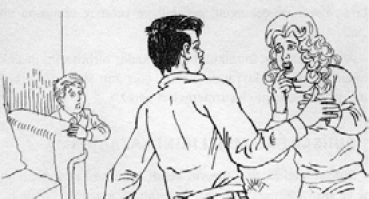
İstediği yapılacak şeyse yapalım, ama uygunsuz bir istekle karşı karşıya isek “hayır” diyelim. Bakışlarımızı gözlerine dikerek otoriter bir ses tonuyla bunun olmayacağını ona söyleyelim. Ve yaptığımızdan da suçluluk duymayalım. Çünkü:
• Çocuğu bazen engellemek, anlık sevinçlerden ve hazlardan vazgeçebilmeyi, vazgeçmek gerektiğini ona öğretir. Bu da çocuğun psikolojik ve duygusal gelişiminde önemli bir deneyimdir. Onun kişilik sahibi, sorumlu ve becerikli biri olmasına yardımcı olur.
• Anne-babanın otorite sahibi ve yetişkin olduğunu öğrenir. Çünkü çocuğumuzun kendi kimliğini rahatça bulabileceği, güvenebileceği, dayanabileceği, ana-baba statüsünü sürekli koruyan, yetişkin, ciddi ve aklı başında bir ana-babaya ihtiyaç vardır.
• Bütün isteklerini kabul edersek, her istediğini yapabileceği bir dünyada olduğunu zanneder. Hâlbuki gerçekler böyle değildir.
• Sonra çocuklar gördükleri her şeyi hemen o anda isterler. Çocuğumuzun isteklerini yerine getirerek her zaman iyilik yapmış olmayız. Gerçek şudur ki; çocuğumuz büyüyüp bir yetişkin olduğunda, istediği birçok şey için beklemek, istediklerinden en önemlilerini seçmek zorunda kalacak ve sonuçta istediklerinin tümünü elde edemeyecektir. Ertelenebilen doygunluk kavramını anlamak, hayatta başarıyı beraberinde getiren değerli bir beceridir. Çok acele ve dürtüsel kararlar vermemeyi bu şekilde öğrenmiş olacaktır.
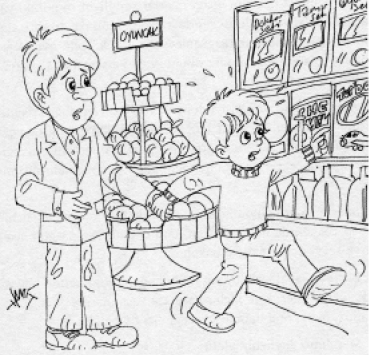
• Yine çocuklar bazen beklemenin gerektiğini de öğrenirler. Anne-baba oyuncakçıda gördüğü her oyuncağı ona satın almayacaktır.
Ebeveynler ve çocuklar bağ kurabildiklerinde, çocuklar onların söyledikleri her şeyin doğruluğuna güvenirler. Çocuklar, çok sevdikleri ebeveynlerine itaat ettikçe, otoriteye güvenmeyi ve saygı duymayı öğrenirler. Hayatta bazı sınırlar olduğunu, istedikleri her şeyi yapamayacaklarını ve her istediklerine sahip olamayacaklarını da kavrarlar.
Bilelim ki; çocuğumuzu nesneler, oyuncaklar, eşyalar değil; onlara ayıracağınız zaman ve enerji mutlu edecektir.
Çocuğumuz her gün güzel tavırlar sergiliyor olsa dahi yapacağı her iyi ve yardımsever davranışını mutlaka dikkate alalım ve onu övmekten vazgeçmeyelim. Çünkü onu övmek ve ona ilgi göstermek, bu tarz olumlu davranışları daha sık tekrarlamasını sağlar.
Ama övgüyle sevgiyi iyi dengelemeliyiz. Her doğru davranışında onu över, ancak hiçbir zaman “Seni seviyorum” demezsek, çocuğumuz sadece doğru davrandığı zaman onu sevdiğimizi düşünecektir. Bu da onun için oldukça üzücü bir durumdur.
Sadece doğru davranışlarını övmekle yetinmeyelim. Hiçbir sebep yokken de ona sarılalım, onu öpelim ve ona gülümseyerek sevgi dolu gözlerle bakalım.
Böylece hayal kırıklığı yaşasa bile, daha sonra bunu unutacak, bizi affedecek ve hiçbir karmaşa yaşanmayacaktır. Çocuğumuz, bizim onu daima seveceğimizi bilmelidir.
Mesajımız şöyle olmalıdır:
“Evladım, yaptığın her davranışı doğru bulmayabilirim. Ama seni daima seveceğim.”
Yalnız bir nokta var: Boş yere ve gereksiz övgüler aksi etki yapar. Hak etmediği övgüleri sıralamaktan da kaçınalım.
Anne ve baba çocuğa disiplin sağlamada tutarlı ve görüş birliği içinde olmalıdır.
Ev kuralları ve beklentileri konularında arada uzlaşma olmalı, farklı fikirlere sahip olunduğunda bunu çocuğa belli etmemelidir.
Anne çok sert, baba yumuşak huylu ise çocuk ebeveynini yönlendirmeyi öğrenir. Ne için, kimden izin alması gerektiğini anlar ve çelişkiyi kötüye kullanır.
Bu yüzden disiplin konusunda eşler birbiriyle konuşmalı, ortak bir stratejiyi geliştirmelidir. Önemli kararları mutlaka beraber almalıdırlar.
Arada çelişkiler ve zıtlıklar olursa çocuk, neyin doğru, neyin yanlış olduğunu anlayamaz.
Bu durum çocuğun davranış olarak kararsız, çekingen, çelişkili ve tutarsız olmasına yol açar.
Anne-babaların mümkün olduğu kadar birbirlerini desteklemeleri, tutarsız davranmamaları, çocuğun yanında birbirinin uygulamalarını eleştirmemeleri gerekir.
Ruhsal bağımsızlık, bireyin kendi kendine hareket edebilme ve yaşayabilme yeteneğini kazanması demektir. Çocuk bunu ailede “eğitim” ve “taklit” yoluyla kazanır.
Aslında çocuğa ruhsal bağımsızlık kazandırmak, ilk yaşlardan yetişkin oluncaya kadar devam eden bir süreçtir. İşte dikkat edeceğimiz temel prensipler:
• Bebek, her bakımdan ilgi, bakım ve yardıma ihtiyaç duyar. Ancak serbestçe hareketler yapmasına engel olmamak, ruhsal bağımsızlığa götürmede önemlidir. Çocuğun her an kontrol edilmesinden kaçınılmalıdır.
• Çocuğa gereksiz baskı yapılmamalıdır.
• Her gün yiyeceği ve giyeceği şeylerde çocuğun görüşü alınmalı, böylece çocuk bağımsız karar vermeye alıştırılmalıdır.
• Çocuğa başlangıçta oyun arkadaşları bulunmalı, ama sonraları arkadaşlarına kendisi karar vermelidir. (Ancak arkadaş seçmesinde dikkatli olunmalıdır.)
• Günlük işleri programlaştırırken çocukların da görüşü alınmalıdır. Böylelikle çocuk, ailenin söz sahibi bir ferdi olduğunu anlayabilir.
• Çocuğa alınacak oyuncaklar, onu pasifliğe değil, aktif olmaya götürecek nitelikte olmalıdır.
Kahvaltıya “başarı yemeği” denilmesi boşuna değildir. İyi bir kahvaltı ile tüm günümüz çok daha güzel geçecektir. Proteinler beyni canlandırırken, kompleks karbonhidratlar da yatıştırıp dinginlik verirler. Bu iki besinin dengelendiği bir kahvaltı, çocuğa bütün gün boyunca faal öğrenme ve doğru davranış açısından yardımcı olur.
Sabah kahvaltı yapan çocukların derslerinde daha yüksek notlar aldığını, dikkatlerini daha kolay topladığını ve karmaşık akademik problemleri daha kolay çözdüğünü biliyoruz.
Kahvaltı yapmayanlar ise gün boyu düzensiz beslenme şekilleri sergilemekte, besleyici değeri olmayan besinlere ve abur cubura yönelmektedirler.
Fazla şeker yiyen çocukların dikkatleri dağılır, huysuzlaşır ve kolay sinirlenirler.
Azlında az miktarda şeker faydalıdır. Kiloları başına yarım gram şeker tüketebilirler. Ancak fazla kaçırdıklarında şişmanlama, diş çürümesi ve “tatlı sendromu”na yakalanabilirler.
Çünkü şeker vücut içinde glikoza dönüşür. Uzun zaman fazla şeker alınması, vücutta B1 vitaminin çok tüketilmesine ve B1 vitaminin yetersizliğine sebep olur. Glikozun çözülememesi ise, süt asidi gibi maddelerin oluşumuna yol açar.
Çocuğumuzun fazla şeker yemesine uygun bir şekilde engel olalım, şekerin sağlığa zararları konusunda onu uyaralım.
Bilelim ki lolipop, kurabiye, pasta, gazoz, kola, akide şekeri gibi basit şeker ihtiva eden gıdalar çocuğun bağışıklık sistemini zayıflatabilir.
Bu yüzden şekeri “Şunu yaparsan veririm” gibi bir ödül haline getirmeyelim, bayramlarda onlara şeker ikram etmeyelim.
Çocuğumuza sağlıklı ve dengeli yeme alışkanlığı edindirmek, ona bütün hayatı boyunca avantaj sağlayacaktır. Ebeveynlerin bebeklerini ve küçük çocuklarını beslerken yaptığı tercihler, onların ergenlik ve yetişkinlik dönemlerinde de devam edecek tat duygusunun, tercihlerin ve alışkanlıkların oluşmasına yardım eder.
İşte anne-babanın uyması gereken bazı hususlar:
• Çocuklara baştan çok çeşitli sağlıklı gıdalar vermek onların daha geniş bir tat yelpazesi geliştirmesine ve çok tatlı, tuzlu ve işlenmiş (rafine) gıdalar yerine doğal tatları tercih etmesine yardımcı olacaktır.
• Düzenli öğünlerle ara öğün vakitlerini kesinleştirmek fazla yemeye yol açabilecek yersiz atıştırmalardan caydırabilir. Ayrıca çocukların yemek yemenin toplumsal boyutlarını öğrenmelerine de yardımcı olabilir.
• Çocukları gıda ve beslenme konusunda eğitmek, sağlıkları açısından onlar adına kişisel bir yatırım olabilir ve iyi gıdalara yönelik olumlu bir tutum kazanmalarına yardımcı olabilir.
• Yemeklerin ve içeceklerin porsiyonuna dikkat etmek ve çocukları doydukları zaman yemeklerini bırakmaya teşvik etmek önemlidir.
Çünkü günümüzde çocuklar çok fazla yiyor ve sağlık problemlerinin de kökeni kötü beslenmede yatıyor. Üstelik çocukların yedikleri sadece büyüme ve gelişme dönemindeki ihtiyaçlarını karşılamak açısından değil, ileriki sağlıklarını etkileyecek olması sebebiyle de önemlidir.
Başarılı ve mutlu çocuklar yetiştiren birçok aile için, akşam yemeği saatlerinin çok önemli olduğunu gördüm. Ebeveynler ve çocuklar bu sosyal zamanı büyük bir heyecanla bekliyorlar. İşin temelinde, yemek yemenin yanı sıra ailenin birlikte olup deneyimlerin paylaşılması yatıyor. Sıkışık günlük programlardan dolayı, her ne kadar “aile yemeklerini” her akşam tekrarlamak mümkün olmasa da, fırsat bulduğumuz her zaman yemeğimizi ailemizle beraber yememizde fayda vardır. Her bir çocuğumuzun konuşma fırsatı bulduğundan ve kendisini önemli hissettiğinden emin olalım.
Çocuklarımızın yaşlarını göz önüne alarak beklentilerimizi gerçekçi bir temele oturtalım: 3 yaşındaki çocuklar, yerlerinde 10 yaşındakiler kadar uzun süreli oturamazlar. Sohbetlerimizi çocuk odaklı konularla sınırlamayalım. Bu yemekler çocukların yetişkin sohbetlerini dinlemek ve bunlara katılmak için yakaladıkları iyi birer fırsattır. Günlük olayları, aile problemlerini, anne ve baba için önemli olan şeyleri ve hatta o gün okulda neler olduğunu konuşup tartışabiliriz. Çocuklar, küçük olsalar bile, sohbetlerden hoşlanırlar.
Ailece sofraya oturmak, sohbet ve muhabbetle birlikte yemek, ruh sağlığını koruyan, birleştirici ve aile hayatı için düzenleyici bir faaliyettir. Çocuklarımızı bu zevkli deneyimden mahrum etmeyelim.
0-6 yaş grubu çocukların bedensel, duygusal, sosyal, zihinsel ve dil gelişiminde oyun ve oyuncakların büyük önemi vardır. Oyun oynarken çocuk mutlu olur. Çocuğun büyümesi ve sağlıklı gelişmesi için beslenme, sevgi, bakım ne kadar gerekli ise oyun ve oyuncaklar da o kadar gereklidir.
Çocuk, oyun yoluyla düşünmeyi ve kendi başına karar vermeyi, sorumluluk almayı, işbirliği yapmayı ve paylaşmayı, sonuca ulaşmayı, konsantre olmayı öğrenir. Motor, sosyal ve dil becerilerini, hayal gücünü geliştirir, dikkatini bir noktaya toplamayı ve becerilerini organize etmeyi öğrenir.
Çocuk, oyun oynayarak kendini ve akranlarını tanır, saldırganlık dürtüsünü boşaltır.
Değişik sosyal rolleri deneme, duygularını dışa vurma imkânını elde eder. Başka nesneler veya insanlarla ilişkilerini inceler. Oyun, kas gelişimini de hızlandırır ve çocuğu güçlendirir. Çevresini araştırma, objeleri tanıma ve problem çözme imkânı sağlar. Kendisini ifade etmeyi, sözlü olarak söylenenleri anlamayı kolaylaştırır.
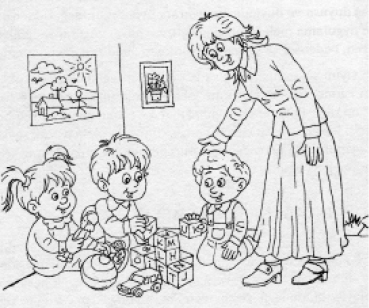
Dağarcığı yeni kelimeler kazanır. Yaşama için gerekli olan kurallarını yine oyunla öğrenir.
Çocuk, oyunla tedirginliğini kontrol eder. Arzularını kısmen gerçekleştirir ve mutluluk arar.
Anne-baba, çocukla birlikte oyun oynarken, karşılıklı gülümseyerek ve mümkün olduğunca göz göze gelerek, neşeli bir atmosfer oluşturmaya çalışmalıdırlar.
Nasıl Oyunlar?
Çocuğun aynada kendisini, anne-babayı görmesi ilgi çekicidir. Anne-baba çocuğun farklı şekiller, renkler görmesinde ve sesler duymasında yardımcı olmalıdır. Eşyalara dokunma fırsatı verip anlayabilmesi için zaman bırakması, sonra ne olduğunu sorması uygun bir oyundur.
Bebeğin elinde tutması için mandal, plastik bardak, kaşık, çıngırak gibi değişik şekillerde eşya ve oyuncaklar vermeli, bu şekilde ellerini bol bol kullanması sağlanmalıdır. Yumuşak ses tonuyla konuşup nazik hareketlerle yaklaşmalıdır.
Çocukla birlikte kitaplardaki, resimlere bakmalı, kitap okumalı, neşeli sözlerle el çırpılmalıdır. Böylelikle mutlu, neşeli ve öğretici bir oyun ortamı sağlanmış olur.
Oyun; düşünceler, duygular ve ilişkiler içinde, beceri ve kontrol kazanmanın önemli yoludur. Oyuncak ise, çocuğun beş duyusu ve duygularını uyaran, uyandıran, değerlendirme ve uygulama melekelerini geliştiren, hayal gücünü zenginleştiren, bedensel ve sosyal gelişimini hızlandıran oyun aracıdır.
Oyun seyretmekten ziyade bir şeyleri yapmaktır. Çocukların işitme, hissetme, görme gibi duygularını harekete geçirir. Oyun değişik seçenekler, imkânlar ve problemleri çözme becerisi kazandırır. Çocuklar gerçek dünyada olamayacak şeyleri oyunlarında gerçeğe dönüştürebilirler. Bu onlar için bir çeşit güç kaynağıdır.
Çocuğumuzun gelişimini sağlamak için ona duyma, görme, koku ve tat alma duyularını geliştirebilecek oyuncaklar verelim. Elleyebileceği, ısırabileceği, koparabileceği, her evde kolayca bulunan nesneler verelim.
Oyuncaklar çocuğun öğrenmesine ve yeni yetenekler edinmesine yardım eder.
İyi oyuncak, her şeyden önce tehlikesiz oyuncak demektir. Keskin kenarlı, sivri uçlu olmayan, zehirli boyayla boyanmamış, kolayca kırılacak malzemeden yapılmamış, çocuğun boğazına kaçabilecek ufaklıkta olmayan oyuncak iyi oyuncaktır.
Yine oyuncak dayanıklı olmalıdır.
Çocukların kendi güçleri yerine, pille veya bilgisayar cipleriyle çalışan oyuncaklar ona heyecan verse de üreticiliklerini zayıflatır. Dikkat toplama sürelerini kısaltır. Bunun yerine çocuğumuzun küplerle, toplarla, renkli kalemlerle, boyalı kalemlerle hayal güçlerini ortaya dökmelerini sağlayalım. Hangi oyuncak olursa olsun çocuğumuzla oynayalım ve oyuncağını arkadaşlarıyla paylaşmasını teşvik edelim.
Yine oyuncak çocuğun yaşına ve gelişme dönemine uygun olmalıdır.
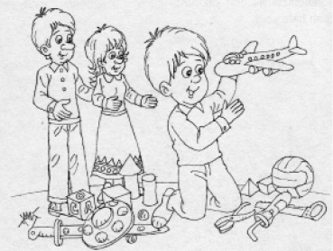
Ama en önemlisi anne-baba olarak onunla oyun oynamamızın, konuşmamızın her şeyden önemli olduğunu bilelim.
Çoğu çocuk günümüzde aşırı ve sağlıksız beslenmektedir. Buna hareketsizlik de eklendiğinde çocuklar fazla şişmanlamaktadırlar. Ayrıca televizyon ve bilgisayar başında hareketsiz geçirilen zamanlar da onları hareketsiz kılmaktadır. Bir de abur cubura dadanırlarsa kilo almaları kaçınılmazdır.
Çocuklar içinde egzersiz yapmak ve hareketli olmak, beden ve ruh sağlıkları için en doğal ilaç konumundadır. Böylece bedeninin dayanıklılık gücü artar, vücuda ve hücrelere oksijen etkili şekilde taşınır.
Egzersiz, formda kalmanın en iyi yoludur. Vücut, yağı depolanmaktansa onu yakmaya başlar. Çocuğumuz enerjik ve canlı hale gelir.
Egzersizin beyin için de faydası vardır. Çocukların kendilerini iyi hissetmelerini sağlar. Ruh halleri dengelenir. Gerilimlerin önüne geçirilir. Çocuğu neşeli yapar.
Çocuğumuzu oyun parklarına, kırlara sık götürelim. Beraber yürüyüş yapalım. Bisiklete binmesini ve güvenlik içinde denize girmesini sağlayalım. Bırakalım oynasın, enerjisini boşaltsın. Aynı zamanda eğlensin, mutlu ve sağlıklı olsun. Boş oturmaktansa faal olsun. Pasif olacağına aktifleşsin.
Çocuğumuz, 5-6 yaşlarında duygusal ve fiziksel yönden büyümeye ve değişmeye başladığının farkındadır. 5 yaşına basmasıyla beraber, kim olduğunu keşfetme yolunda odaklandığı en önemli şey; cinsiyetidir. Yani kız veya erkek olduğuna ilgisi çekilir.
Bu yaşlarda kız çocukları sürekli süslü, gösterişli kıyafetler giyer ve tamamen bir bayana uygun şekilde hareket etmeye çalışırlar.
Erkek çocukları ise sadece babaları gibi olmak isterler ve birer erkek gibi davranmaya başlarlar. Çocuk bu yüzden gerek giyim kuşam, gerekse davranış şekli açısından kendi cinsel kimliğine uygun olarak yetiştirilmelidir.
Bu yaştaki çocuklar, birer erkek ve kız olarak yeni buldukları kimliklerini sağlamlaştırmak için kendisiyle aynı cinsiyeti taşıyan ebeveynine doğru ciddi bir yakınlaşma gösterirler. Böyle bir durumda anne-baba birbirine ve çocuklarına destek vermeli, çocuğu cinsiyetine has davranışlara teşvik etmelidir. Böylelikle cinsel kimlikleri pekişir. Bu yüzden anne-baba, davranışlarıyla ve sözleriyle çocuklara uygun model teşkil etmelidirler.
Çocuk büyük merakla kendini keşfettikçe cinsel konularda sorular sormaya başlar. Anne-babalar bu sorulara korkutarak veya öfkelenerek değil, çocukların anlayabileceği şekilde kısa, açık ve dürüst cevaplar vermeye çalışmalıdırlar. Asla yalana ve anlaşılmaz yollara sapmadan, sade ve anlaşılabilir örneklerle anlatılmalıdır. Çocuk, yetişkinlerin anladığı şekilde ancak 11-12 yaşında cinsellikle ilgilenir. Yoksa bu yaşlardaki soruları her şeyi merak etmelerinin bir parçasıdır.
Çocukların sorularına açık şekilde cevap vermek her yaş için çok önemlidir. Çocuğumuz böylelikle cinsellikle ilgili konuşmanın kötü bir şey olmadığına inanır, bizim onun hislerini anladığınıza güvenir ve ihtiyaç duyduğu bilgileri anne-babasından edineceğine emin olur.
Bir başka nokta da sorularına kısa cevap vermek ve yalnızca merak ettikleri şeyi anlatmaya çalışmaktır. Ayrıntılı bilgi vermek yanlış olur. Meraklarını, yaşlarının kaldıramayacağı hususlara çekmemelidir. Açıkça ve sade ifadeyle doğruları söylemeliyiz.
Ayrıca bazı çocuklar anne ve babalarının cinsel hayatları hakkında da soru yöneltebilirler. Böyle bir durumda, uygun bir üslupla cinsel yaşantıların özel ve mahrem konular olduğu, başkalarıyla paylaşmanın veya açık şekilde konuşmanın uygun olmayacağı anlatılmaya çalışılmalıdır.
Cinsiyete has bazı sorularını, “Bu soruya annen veya baban cevap versin” şeklinde aynı cinse havale etmek daha uygundur.
Yine anne-babalar yatak odalarının kapılarını kapamalı, çocuklar ancak izin alarak girmelidirler. Erkek ve kız çocukların odası 6-7 yaşından sonra ayrılmalıdır. Çocukların yanında çıplak dolaşılmamalıdır.
Çocukların 6-7 yaşlarında cinsellikle ilgili merakları giderek azalmaya başlar. Cinselliğe olan merak, ergenlik döneminde tekrar ortaya çıkmak üzere kaybolur.
Okul ve uykudan sonra televizyon 4-10 yaş çocuklarının üçüncü aktiviteleridir. Bazıları günde 2 saatlerini TV başında geçirseler de, bu kadar fazla seyretmeleri doğru değildir. Çünkü:
• TV, çocukların en hareketli, en enerjik olanını bile, tamamı ile kafasını meşgul eden programlarla donuk hale çevirir. Anne-babalar, rahat edecekleri için bundan memnun kalsalar da çocuğun potansiyelini geliştirebilmesi için vücudunu kullanmaya ihtiyacı vardır.
• Çocuk hareketsizlikten kilo alır. Hele TV seyrederken cips, çerez yiyorsa…
• TV şiddet içerir ve çocukların izledikleri çoğu program onlarla ilgili değildir. Hele sanal kahramanlara özenirse, endişe verici sonuçlar ortaya çıkar.
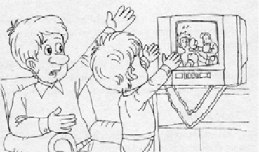
• Çocukların gerçek hayatı çarpık bir şekilde algılanmasına sebep olur. TV hep anormal olanı sansasyonel bir şekilde, olmadık tesadüflerle vurgular.
• İçki, sigara ve şeker kaplı şişmanlatıcı gıdalar, TV sayesinde çocuklara cazip gelebilir.
• Çocuklar, TV ile pasif bir alıcı rolündedir. Bu da ondaki araştırma ve öğrenme zevkini baltalar.
• Uyku düzensizliklerine yol açar.
• TV, dikkat toplama sürelerini kısaltır. TV seyretmek için kısa süreli dikkat toplanması yeterlidir. Oysa okumak, çalışmak ve sınıfta ders dinlemek uzun süreli konsantrasyonu gerektirir.
• TV çocukları şiddete, cinayetlere ve cinsel sapmalara karşı duyarsızlaştırır.
Ölçü Nedir?
2 yaşına kadar ekran başında onları hiç tutmayalım.
Çocuk 2-3 yaş arası ise 20 dakikadan fazla TV karşısında durmamalıdır.
Yaklaşık 3-4 yaşından itibaren, zekâ gelişiminin durumuna ve zevklerinin uyumuna göre bir belgeseli arada sırada seyretmesine izin verelim.
Yaşı ne olursa olsun, çocuğumuzun neyi izlediği kontrolümüz altında olmalıdır. Televizyonun günlük hayat alışkanlığı haline dönüşmemesine dikkat edelim.
Ne Yapmalı?
• Akşam eve gelir gelmez televizyonu açmayalım. Aksine onunla seviyesine göre oyunlar oynayalım.
• Evde tek televizyon olmalı. Özellikle yatak odasında bulunmamalıdır.
• Yemek esnasında sofra başında TV kapalı tutulmalıdır.
• Onu oyun oynamaya teşvik edelim. Böylelikle TV’den uzak tutmaya gayret edelim.
• Tek başına televizyonu açmasına ve kanal değiştirmesine izin vermeyelim.
• Ürktüğü olaylar hakkında rahatlatıcı yorumlar yapalım.
• TV seyrederken yanında kalmaya çalışalım.
• Ona reklâmların bizi etkilemek ve satın almaya teşvik için hazırlandığını açıklayalım.
• Gerektiğinde hayır demesini bilelim ve izleyeceği programı gözden geçirelim.
Çocuğumuzu büyütürken büyük bir enerji ve zaman harcamaya istekli olalım. Özellikle bebeğin ilk yıllarında anne-baba sadece verici durumdadır. Yorgun olduğumuz veya sabrımızın kalmadığı anlarda dahi devamlı sevgi ile isteyerek vermemiz gerekir.
Mutlu ve sağlıklı çocuklar yetiştirmenin gerçek yolu budur. Bunu yaparak sadece çocuğumuza bir şeyler katmakla kalmaz, ebeveyn olarak biz de büyüyüp olgunlaşırız.
İşte yaptıklarımız ve sonuçları:
• Bebeğin anlayışına hassas olmak ve uygun karşılığı vermekle iletişim kurma becerisi ve kendine güveni artar. Kendisiyle ilgilenen olduğunu kavrar.
• Acıktığında bebeği beslemekle insanların ilgili ve hassas olduğunu görür, çevresine güveni oluşur.
• Sık sık göz teması kurmakla karşısındaki kişinin duygularını okuma becerisi kazanır.
• Bebeği uzun süre kucakta tutmakla korkuları yatışır, kendini çok iyi hisseder ve rahatlar.
• Üzgün, kızgın olduğunda bebeği rahatlatınca hislerinin anlaşıldığını, yardım etmeye çalıştıklarını görür. Empati yeteneği gelişir.
• Annenin kucağında taşıyarak gezdirmesiyle bebek hissî ve yeni deneyimler sağlar.
• Bebeğe yakın uyumakla bebek uykudan zevk alır. Sağlıklı uyku alışkanlığı oluşur ve rahatlar.
• Bebeğe sevgi ve mutluluk yansıtınca mutlu olur, bebeğimiz diğer insanları da mutlu ettiğini düşünür ve bundan memnuniyet duyar.
Büyükanne ve baba torunlarına sevgi verir, onları yüceltir ve onlarla gurur duyduklarını gösterirler. Torunlarını candan sever, gerekirse teselli ederler.
Büyükanne ve baba çocuğa hayatın gidişatı hakkında tecrübesini aktarır. Ailenin tarihçesiyle ilgili bilgi verir. Çocuğun anne ve babasının çocukluk hatıralarını anlatırlar. Böylece torunun, anne-babasının da bir zamanlar çocuk olduğunu ve çocuğun geniş bir ailesinin bulunduğunu anlamasına yardımcı olurlar.
Ana-babasının çocuk üzerindeki eğitim baskısından uzak olduklarından rahat ve özgür hissederler kendilerini. Torunları ile genelde çok esnek ilişkileri olur.
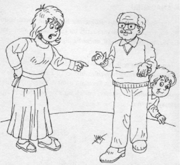
Torunlarını ana baba gibi devamlı değil, daha seyrek görürler ve onları mutlu edebilmek için ellerinden geleni yaparlar. Çocuklarımız onlarla güzel vakit geçirir.
Büyükanne ve baba olmakla onlar da çok şey kazanırlar, mutlu olurlar.
Bu güzel yanlar yanında büyükanne ve baba, çocuğunun eğitimini üzerine almaya, anne babanın verdiği disipline müdahale etmeye kalkmamalıdır. Onlara çocuğumuzun alışkanlıklarını, ritmini ve saatlerini detaylarıyla açıklayalım. Bırakalım torunlarıyla ilgilensinler, tecrübe ve sevgilerini onlara aktarsınlar. Yeniden evlat sevgisini tatsın ve yaşamaya daha çok bağlansınlar. Ancak çocuğa zarar verecek müdahalelerden kaçınmak şartıyla…
Anaokulları çocukları ilköğretime hazırlayan kurumlardır. 3-6 yaş çocuklarının devam ettiği bu kurumların amacı okuma yazma öğretmek değil, ancak bu olgunluğu kazandırmaktır.
Anaokullunda renk, sayı ve kavramlar somut şekilde çocuğa aktarılır. İnsanlar, hayvanlar, ülkeler ve dünya hakkında temel bilgiler verilir. Çocuk kurallara uymayı, yaşıtlarıyla ilişkiye girerek birlikte yaşamayı, yemek yemeyi, oynamayı ve paylaşmayı öğrenir.
Okul Öncesi Eğitimin Yararları
• Yaşıtlarıyla oynaması ve iletişime girmesi çocuğun dil yeteneğini geliştirir, kelime haznesi artar. Telaffuzu düzelir.
• Tuvalet alışkanlığı da anaokulunda pekişir.
• Meraklı çocuğun çok sayıdaki sorularına buradaki eğitimci uygun cevapları verir.
• Daha çeşitli ve daha uygun oyuncaklarla ve oyun arkadaşlarıyla oynar, sosyalleşir.
• Kişilik gelişimine yardımcı olur. Paylaşmayı ve birlikte oynamayı öğrenir.
• Okul fobisi azalır. Anne ayrılığına alışır ve anneye bağımlılığı kırılır.
Anaokulu Yoksa
Düzenli bir anaokulu deneyimi olmayan çocukların bu becerileri evde kazanması gerekir. Anne-babanın çocuğun sosyalleşmesine katkıda bulunması önemlidir.
Bunun için eve yaşıtı çocuklar davet edilmeli, oyun parkı gibi alanlarda çocuk sıklıkla vakit geçirmelidir. Süpermarket, bakkal, pazar gibi değişik mekânlarda bulunmalı; hayatın içinde yer alması için kendine imkânlar oluşturulmalıdır. Aile çocuğa anaokulunda kazandırılan temel eğitsel bilgileri vermelidir. Mesela kırmızı, sarı, mavi ve yeşil gibi temel renkleri; bazı harfleri ve 1’den 10’a kadar sayıları tanıyabilmek gibi…
Çocuk yine okula başlamadan önce ön bakım becerilerini ve tuvalet eğitimini kazanmış olmalıdır. Sözgelimi; giysilerini giyip çıkartabilmeli, burnu akınca silebilmeli, dişlerini fırçalamalıdır. Bu dönemde çocuğun temel fiziksel beceriler edinmesi de çok önemlidir. Mesela; tek ayağı üzerinde durma, sekerek sıçrama, top atma ve tutma, salıncakta sallanma, dairevî oynama gibi…
Çocuğumuzun kendine güvenmesi, kişilik gelişimi açısından oldukça önemlidir. Güven duygusu gelişmemiş kişiler; yapıcı, üretici ve girişken olamazlar. Bu konuda aileye önemli görevler düşmektedir.
• Aile ve okul ortamında sık söz hakkı olmalıdır.
• Duygu ve düşüncelerini baskı olmadan açıklayabilmelidir.
• Kendisiyle ilgili bir şeyler anlattığında onu izleyelim. Ciddiye alındığını fark etmelidir.
• Başarılı ve olumlu davranışlarını tasvip ettiğimizi ve beğendiğimizi belli etmeliyiz.
• Yaşına uygun iş ve görevler verelim. Yerine getirdiğinde onu kutlayalım.
• Okul ve derslerin dışında sanat, kültür, ülke sorunlarında sohbet edelim.
• Yaşadığı veya yaşayabileceği sınav, yarışma gibi korku ve endişelerine anlayışla yaklaşalım.
• Yanlış ve uygunsuz davranışlarını cezalandırmaktan kaçınalım.
• Hatalarını kendisine buldurarak, doğrusunu ona söyletelim.
• Başkalarının yanında çocuğumuzu eleştirerek, ona öfkelenerek küçük düşürmeyelim.
• Akranlarıyla ve kardeşleriyle kıyaslamayalım. Yapıp başardığı önceki çalışmasıyla son durumu kıyaslayalım.
• Yeteneklerini fark edelim ve yetenekleriyle ilgili cesaret verelim.
• Yaşına uygun oyun faaliyetlerine katılmasını destekleyelim.
• Onun için önemli olan şeyleri biz de önemseyelim. Sevinçlerine ve duygularına katılalım.
• Aile için vazgeçilmez olduğunu, onu çok sevdiğimizi hissettirelim.
İlk çocukluk yaşlarında ölüm korkutucu değildir. Çünkü çocuğun zihni ölümü anlayabilecek derecede gelişmemiştir. Çocuklar ölümle pek erken yaşlarda ilgilenmeye başlar, duydukları ölüm haberi ve sözlerinden bir mana çıkarmaya çalışırlarsa da pek etkilenmezler.
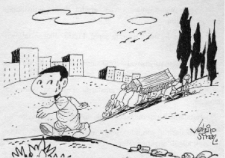
2-3 yaşlarındaki çocuk, oyunlarında ölümden bahsetmeye başlar. Oyuncak tabancasının tetiğine basar ve “Sen öldün” der. Fakat ölümden anladığı hareketsiz kalmaktır, yok olmak değil. Bu yaşlarda çocuk ölümden hiçbir kaygı yaşamaksızın bahseder. Ölümün kaçınılmaz olduğunu bilmez, onu tasavvur edemez.
3-4 yaşlarında çiçeklerin pörsüdüğünü, yaprakların düştüğünü ve böceklerin ezilebildiğini keşfeder. Anlar ki bunlar bir sondur. Fakat ölümün kendisine ulaşacağını düşünmez. Ölümü, uzun bir ayrılık veya dönüşü olmayan uzun bir yolculuk olarak görür.
5 yaşlarında ölüm, uzun bir uykuyla eş manaya gelir ve yavaş yavaş korkutucu olmaya başlar. Çocuk, anne-babasının ölüp ölmeyeceğini sık sık sorar. Ölümle ilgili cevaplaması zor sorular yöneltir.
5-6 yaşlarındaki çocuklar ölümle hastalık ve yaşlılık arasında bir ilişki olduğunu kavramaya başlarlar. Yaşlı bir kimsenin hemen öleceğini düşünürler. Gene de ölümden, uykudan uyanır gibi geri dönülebileceğini zannederler. Bu yaşlardaki ölüm korkusu, yetişkinlerdeki gibi değildir. Aslında yalnız kalmak korkusu altta yatmaktadır.
Nasıl Yaklaşmalı?
• Çocuğumuzun sorularına uygun cevaplar verelim, başımızdan savmayalım.
• Ölenlerin nereye gittiğini sorduğunda ona inancımız ve imanımızı anlatalım. Öldükten sonra hayatın başka bir dünyada devam ettiğini söyleyelim. Gelecekte bizim de ömrümüzü tamamladığımızda onunla buluşacağımızı da ekleyelim. Ölümden korkmasına sebep olacak söz ve davranışlardan kaçınalım.
• Ne zaman öleceğimizi sorabilir. “Bilmiyorum. Kimse hayatının ne zaman biteceğini bilmez. Ne zaman kaderimize yazılmışsa…” gibi cevaplar verebiliriz.
• Bazen çocuklar bir yakının ölümünden kendini sorumlu hissedebilir. Bunu anladığımızda müdahale edelim ve bunun doğru olmadığını ona izah edelim.
• Çocuğun üzüntüsünü gidermek için, ölen kişinin geri geleceği gibi yanlış açıklamalardan kaçınalım.
• Ölen kişiyi özleyeceğimizi, onun yerini kimsenin tutamayacağını söylersek çocuğun acısını hafifletiriz, onu anladığımızı göstermiş oluruz.
Manevî eğitim de çocuğumuz için çok önemlidir. Manevî inançları olmayan çocuklar kendilerini eksik ve yalnız hissederler. Depresyona girme riskleri fazla, kendilerine güvenleri azdır. Hayatın bir anlamı olduğuna inanmak onlar için rahatlatıcıdır.
Aslında çocuklar dünyanın sırlarla dolu olduğunu bilirler. Onlar için her şey yenidir. Yoğun bir şekilde meraklı ve tabiatı gözlemeye yatkındırlar. Baharda bir kırda çocukları yürütmek, kelebekleri ve kuşların öbekler halindeki hareketlerini izlemek, yeni açan çiçeklere bakmak harikadır.
Çocuklar için tabiat ve hayat gerçekten hayranlık uyandıracak şekilde olabilir. İşte bu devrede duygu ve düşüncelerini bizimle paylaşmak isterler. Tabiatın bu güzelliklerini ve her yıl tazelenişini ise ona vereceğimiz inançla izah edebilirler.
Maneviyat ebeveynlerden öğrenilir. Güven veren, hevesli, uyumlu anne-baba çocuklarına da inanç aşılarlar. Çocuklar göremedikleri bir varlığa güvenmeden önce, görebildikleri ve hissedebildikleri ebeveynlerine güvenmeyi öğrenmelidirler.
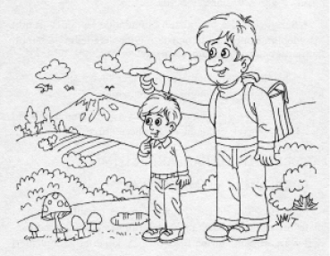
Maneviyatın günlük aile yaşantısından ayrı bir şey olmadığını, aksine aile hayatının tam kendisi olduğunu bilmeliyiz. Aslında her an maneviyatla iç içe yaşıyoruz. Gökyüzünü, bulutları, ağaçları, bin bir renkte çiçekleri, süt veren koyun ve inekleri seyredelim. Çocuğumuzla tüm bunların nereden geldiğini ve onları kimin bize ikram ettiğini konuşalım.
Çocuğumuz günlük hayatın manevi boyutunu bildiğinde ruh sağlığı ve mutluluğu çok şey kazanacaktır. Daha mutlu, daha huzurlu ve kendine daha güvenli olacaktır.
Onu dua etmeye, bir işe (özellikle yemeğe) başlarken Allah’ın adıyla başlamaya, verdiği nimetler için Rabbimize şükretmeye sevdirerek alıştırmalıyız.
Allah’ı hep “ceza veren ve azap eden” varlık olarak değil de, “kullarına merhamet eden” olarak tanıtalım. Rabbimizden korkmaktan çok sevmeyi öğrensin.
Bilsin ki, adil ve merhameti sonsuz Rabbimiz onu kollamakta, o uyurken bile onu izlemektedir.
Hasta iken şifayı veren de O’dur. Ailenin ölen büyüklerini O yanına almıştır. Çocuğumuz İslam’a bağlandıkça cesaret ve dayanma gücü de bulur.
Bayramlara, kandillere, cumalara, ramazan ayına özel önem verelim. Dinî faaliyet ve ibadetlerimize çocuğumuz da katarak zevk almasını sağlayalım.
Çocuklar ancak 1,5-2 yaşlarında kendi benliklerinin ve ayrı bir fert olduklarının farkına varırlar.
2-3 yaşta, “ben” ile başkaları arasındaki sınır henüz keskin değildir. Çocuklar ancak dört yaşında zihinsel bir sıçrama gösterirler. Bir anda görünüşle gerçeği ayırt edebilir hale gelirler. Yalan söylemeye başlarlar ve başka insanların kafasında kendilerinkinde olduğundan farklı düşünce ve gerekçelerin olabileceğini kavrarlar.
Kalıtımsal özelliklerin yanı sıra hayatın ilk yıllarında yaşanan tecrübe edilen görgü ve bilgiler bir çocuğun acıma ve merhamet duygularına sahip bir insan haline gelip gelemeyeceğini belirler.
Mesela kötü davranışlara maruz kalmış okul öncesi çocukların, ağlayan yaşıtlarına karşı kesinlikle yakınlık göstermedikleri ve onların acılarını anlamakta zorlandıkları gözlemlenmiştir.
Anne-baba muhakkak anlayışlı ve açıklayıcı bir eğitim tarzına sahip olmalıdır. Çocuklara sınırlar koymalı, ama bunların gerekçelerini de onlara izah etmelidir. Ebeveynler çocuklarını, sürekli başkalarının duygularını dikkate almaya teşvik etmelidir. Çocuklarımıza ve başkalarına saygımızı göstererek, çocuğumuza hem saygı kavramını öğretir, hem de bize ve değerlerimize saygı duymasını sağlamış oluruz.
Tedbirli ebeveynler bir şey daha yapabilir:
Televizyonu daha sık kapatmak… Yapılan çok sayıda araştırmaya göre beyazcamın benciller üzerinde yoğunlaşmasıyla ve katliam görüntüleriyle televizyon, duygu akışını, hoşgörüyü, yardımseverliği ve nezaketi köreltmektedir.
* * *